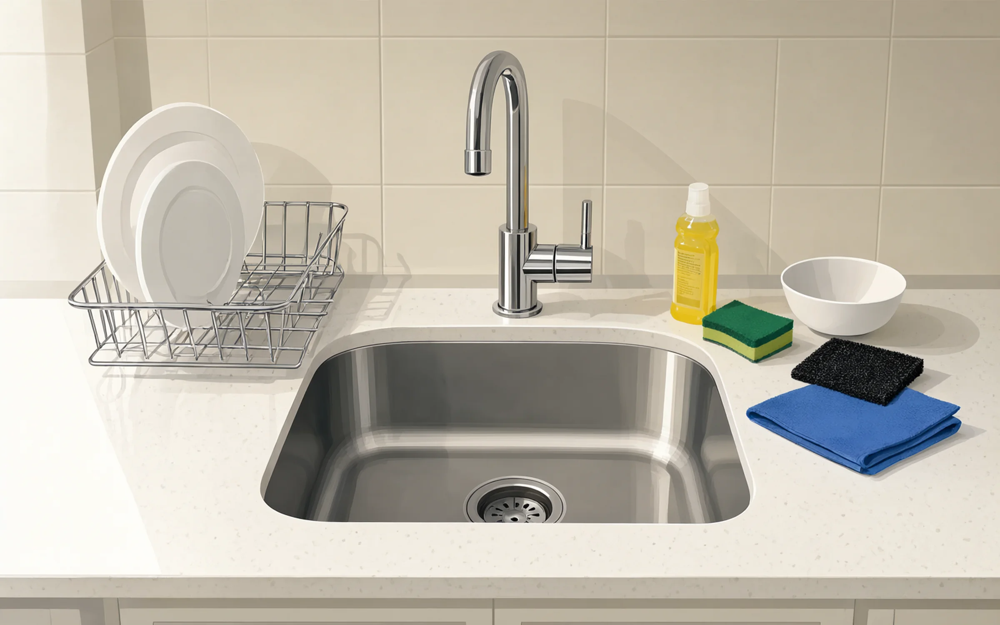
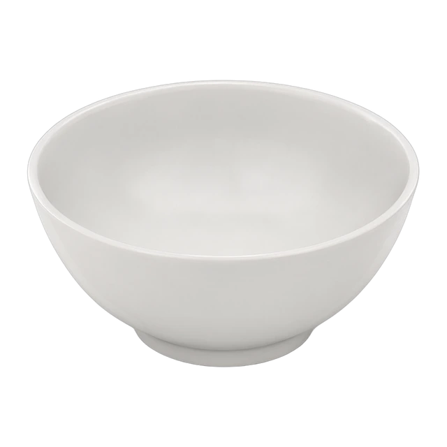
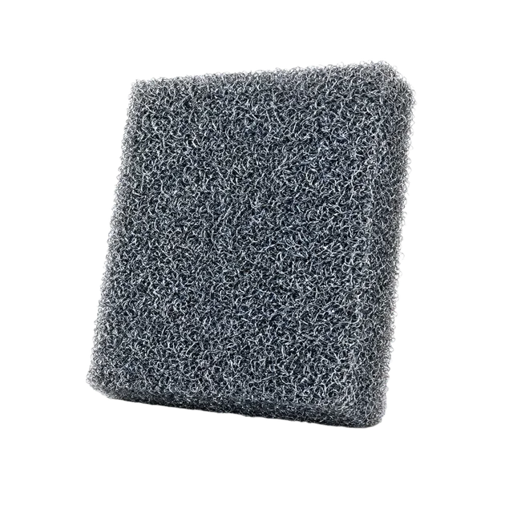
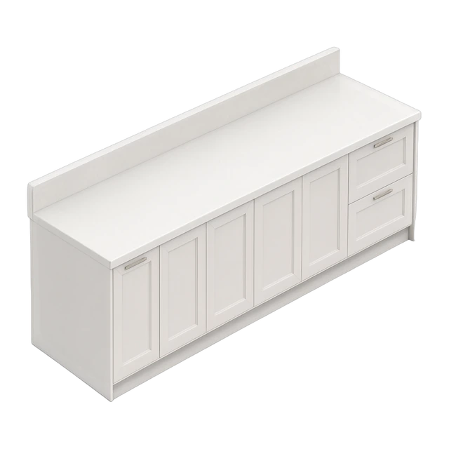

厨房
家居
服装
食物
身体部位
美妆与护肤
出行
Sink
水槽区
场景
卡片
扁平
柔光
线描
女声
男声

指到或点一下物品
再听一次
kitchen sink
faucet
dish rack
plate
dish soap
bowl
sponge
scouring pad
cleaning rag
kitchen counter
kitchen sink
水槽
faucet
水龙头
dish rack
沥水架
plate
盘子
dish soap
洗洁精

bowl
碗
sponge
海绵

scouring pad
百洁布
cleaning rag
抹布

kitchen counter
台面
厨房
Cooktop 灶台区 ›